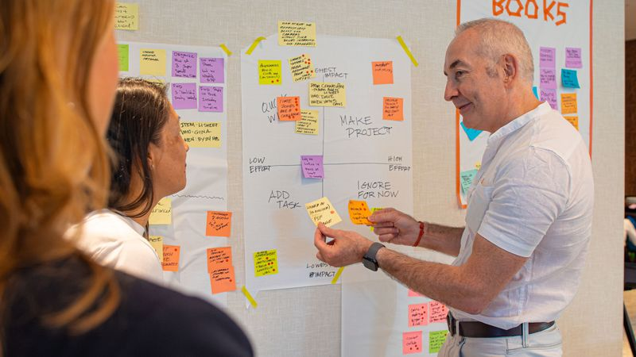
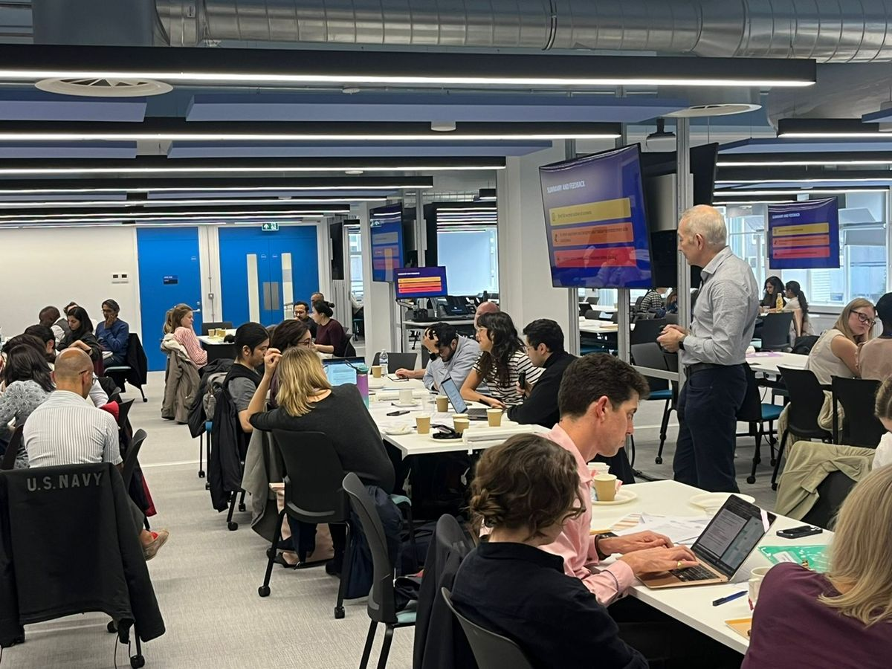
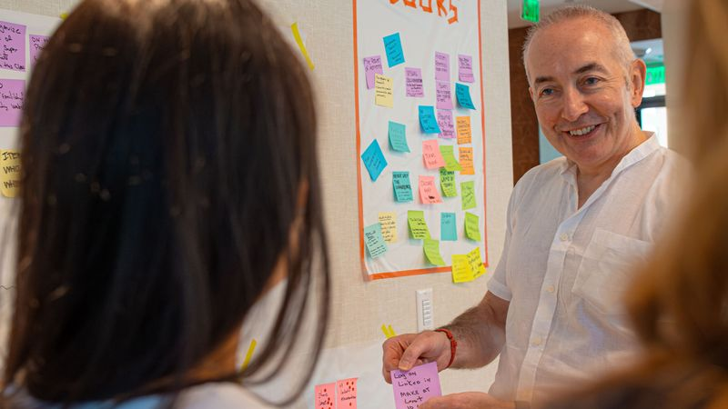

A structured process that moves leadership teams from discussion to documented, owned decisions - in a single session.
Most leadership offsite sessions produce discussion summaries, slide decks, and good intentions. The Echelon Decision Sprint is designed for a different outcome: binding commitments with named owners, stated trade-offs, and a 30-day review mechanism.
We don’t facilitate conversation. We facilitate decisions.
Before any session, we run a pre-session diagnostic call with key stakeholders to map the real constraint - not the stated agenda. We send individual pre-work to all participants and conduct a stakeholder analysis to identify likely dynamics, disruptors, and silent voices.
The agenda architecture is designed around decision mechanics, not discussion topics.
Every session opens with individual silent writing before any group discussion. This removes anchoring effects and ensures every voice is captured. Leaders rank priorities independently; overlap and conflict are surfaced visually before any debate begins.
We bypass groupthink by design, not by hoping for it.
For every top priority, we ask the explicit question: “What stops or slows for this to happen?” This is where most sessions fail - they reach the point of discomfort and stop. We hold the room in that moment. Trade-offs get named, documented, and signed off.
If nothing was given up, the decision hasn’t been made.
No item leaves the session without a named owner, a deadline, and stated success criteria. We use commitment mechanics that make it psychologically difficult to leave the room without clarity on who owns what.
If no one owns it, it isn’t a decision - it’s a hope.
Every session closes with a full read-back of the decision log. Each leader confirms or amends their commitments on record. We deliver a decision log, a one-page priority map, and a 30-day review framework before anyone leaves the room.
Alignment that doesn’t survive 30 days wasn’t alignment - it was politeness.



Every session produces tangible artefacts - not just good feelings.
Every decision with owner, deadline, and success criteria.
One-page summary - ranked, resourced, with trade-offs.
Commitments with owner, date, and review trigger.
Review cadence and escalation rules.
Every agenda is designed around the decisions that need to be made - not the topics that need to be discussed. This changes the energy, accountability, and output of the session.
We don’t let groups leave without naming what they’re giving up. Every priority has a cost. We make that cost visible and get it signed off.
Founded by a medical doctor, our approach brings diagnostic rigour to facilitation. We read room dynamics the way a clinician reads a patient - with calm, trained attention to what’s not being said.
We create the conditions for candour without chaos. Silent writing, independent ranking, and structured conflict protocols ensure every voice is heard - not just the loudest.
Every session produces a decision log, priority map, and commitment register. You leave with documents you’d stake your reputation on - not slide decks you’ll never open again.
We don’t stop at the session. The 30-day review framework ensures alignment holds past the corridor, past the email chain, and past the next crisis.